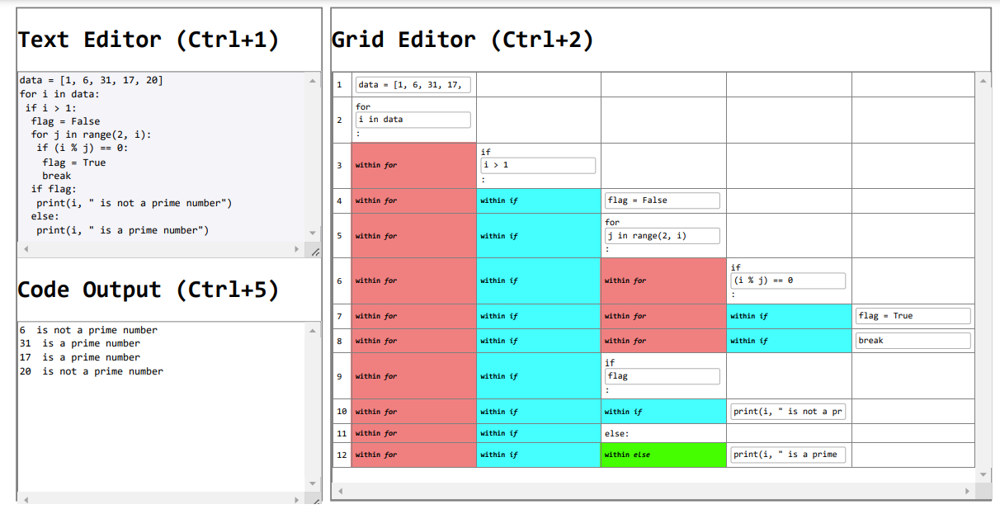
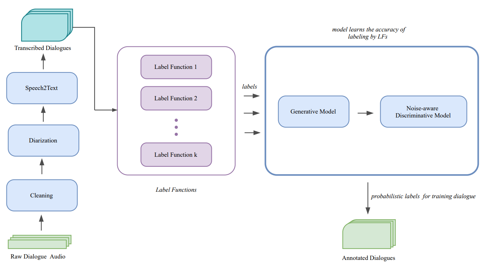
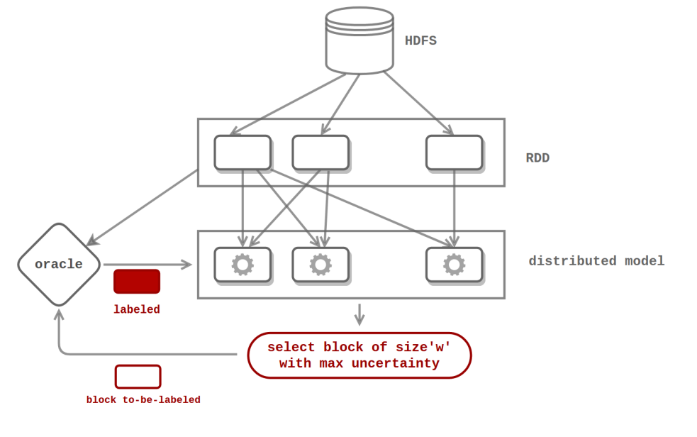
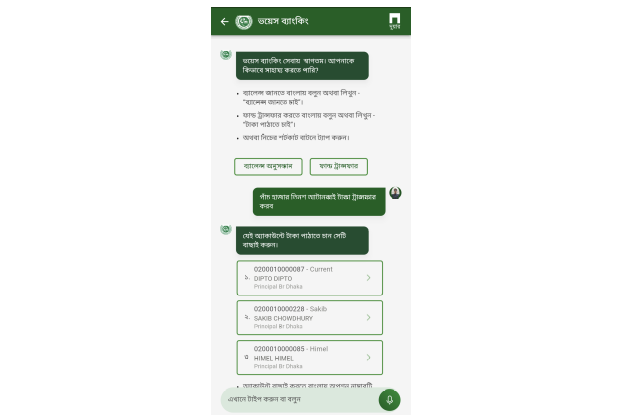
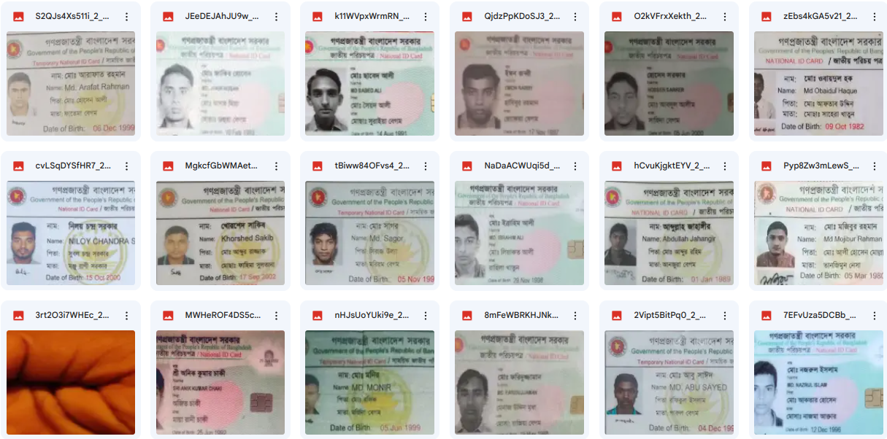
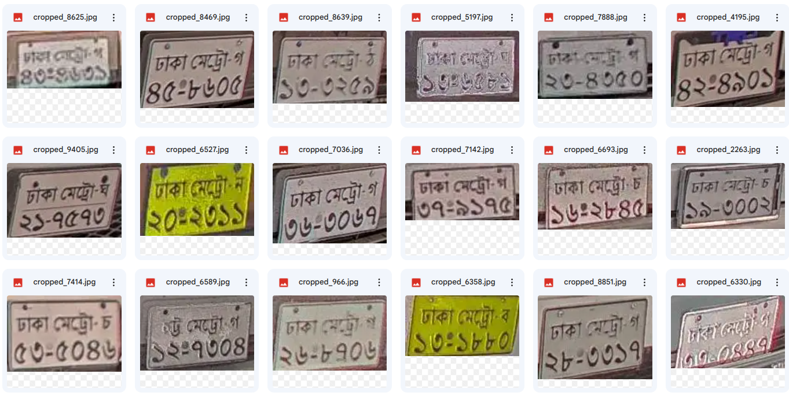
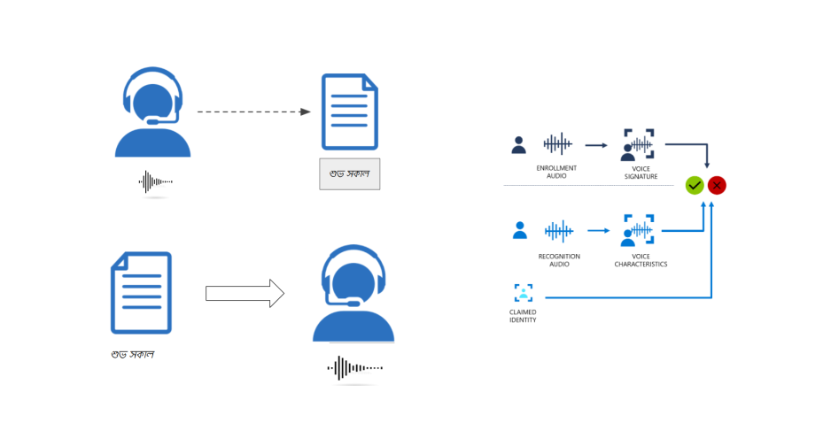

|
Syed Mostofa Monsur
I am a Lead AI Research Engineer at
Celloscope in Dhaka, Bangladesh,
where I lead the AI Team (Speech, Vision, NLP). I have 4+ years of experience working in the industry
where I developed multiple user-facing systems powered by NLP and Speech-based UX.
At Celloscope I have been developing Real-World Applications with Natural Language Interfaces
thus making services accessible to hundreds of thousands of users who have limited access to information.
I received my Bachelor of Science in Computer Science and Engineering with a Major in Artificial
Intelligence from CSE BUET. There I worked with
Professor Muhammad Abdullah Adnan on
Human-in-the-Loop Machine Learning.
Email /
CV /
Google Scholar /
Github
|
|
Research Interests
I'm interested in Human-in-the-Loop Machine Learning, NLP, Conversational AI, Human-Centered Design etc.
|

|
Grid-Coding: An Accessible, Efficient, and Structured Coding Paradigm for Blind and Low-Vision Programmers
Md Ehtesham-Ul-Haque,
Syed Mostofa Monsur,
Syed Masum Billah
UIST, 2022 (Best Paper Award)
project page
/
video
/
paper
Grid-Coding is a new paradigm for non-visual
programming on grid structure instead of text editors that enables
blind and low-vision programmers to interact with source code
more effectively. Through participatory sessions and
evaluation with 12 BLV programmers, it proved to enhance code
navigation, context understanding, syntax error detection,
unique usage patterns and overall programming productivity
compared to regular text editors.
|

|
SHONGLAP: A Large Bengali Open-Domain Dialogue Corpus
Syed Mostofa Monsur,
Sakib Chowdhury,
Md Shahrar Fatemi,
Shafayat Ahmed
LREC, 2022
poster
/
paper
SHONGLAP: Bengali's first large annotated open-domain dialogue
corpus, a breakthrough for low-resource languages. Leveraging
weak-supervision techniques, this 7.7k+ fully annotated dialog
dataset enhances language models like BanglaBERT for improved
downstream classification tasks.
|

|
Distributing Active Learning Algorithms
Syed Mostofa Monsur, Muhammad Abdullah Adnan
NSysS, 2020
video
/
slides
/
paper
This work presents distributed implementations of advanced
active learning algorithms, addressing the challenge of
optimizing labeling sequences for large unlabeled datasets,
and demonstrating improved performance compared to random
labeling scenarios on real datasets using multinode spark
clusters and distributed file systems.
|

|
Agrani Voice Banking
Leaded Speech and NLU Team at Celloscope
Led development of Agrani Voice Banking, Bangladesh's
pioneering Voice-based AI Chatbot for seamless banking
activities, serving hundreds of thousands of real-users.
Agrani Bank is
Bangladesh's one of the largest state-owned banks with a huge number of customers
who have very little access to information. Agrani Voice Banking makes
banking services accessible to everyone. It is powered by Bengali ASR
and a finetuned NLU engine for natural language-driven
fund transfers and inquiries.
|
|

|
National ID Information Extraction using Document Transformers
Leaded NLP Team at Celloscope
slides
After fine-tuning pretrained document transformers,
it achieves significantly good performance on extracting
NID information. We treated the NID extraction problem
as a document question-answering problem – querying on
key fields of the NID image document. The model is fine-tuned
with real user data and synthetic data as well.
|
|

|
License-Plate Extraction from Very Noisy Real-World Deployment
Leaded NLP Team at Celloscope and ML Team at Spectrum
slides
License-Plate extraction task in very noisy real-world setting. Fine-tuning
end-to-end sequence extraction models on real and synthetic data for
better performance. System deployed in several toll booths in Bangladesh for
reporting analytics.
|

|
Industry-Grade ASR, TTS and Speaker Verification for Bengali Speech-Driven Systems
Leaded NLP Team at Celloscope
Collected and pre-processed 400+ hrs of Bengali audio and
transcription. Trained end-to-end high-quality ASR models.
Trained industry-grade TTS for Bengali language with 40+ hours of
curated data and improved generated audio quality with Vocoders (naturalizing audio)
Integrated with Natural Language driven User Interfaces
including speech-driven chatbots. Developed industry-grade speaker
verification system using ensemble of pre-trained
unispeech-sat, wavlm and ecapa-tdnn.
|
|
{kind=link}